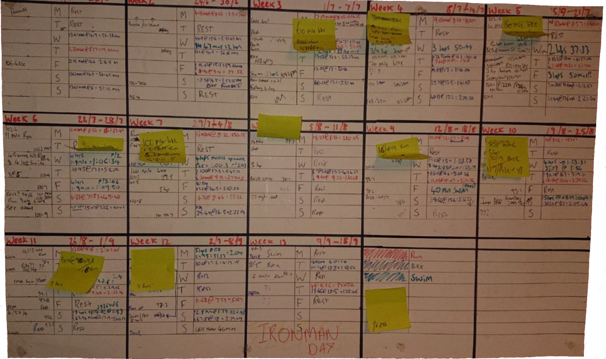

So then, I completed my Ironman in just over 13 hours. 13 hours is the average time for my age group so not too bad for my first effort. My
approach to training was to do what works for me, I looked at a number of training plans and I didn't think that any of them would suit as
I would need fit training in around work and everything else. I know there would have been more effective ways but I would have struggled to
stick to them.
Find the right time to start your training plan
I think this is all down to the individual and how fit you currently are. With the event in September I had quite a bad knee injury in February,
I was going a bit to fast while skiing and had a spectacular wipe-out. Before this injury I was reasonably fit and had a good platform to build on.
The injury was quite a big setback and I was pretty much out of action for 10 weeks. looking back at some of the photos I put a bit of timber on
during this time too. I must have got back to training mid May where I eased myself back in to it for about a month. After this I put a 13 week
training plan into place from Monday 17th June until race day on the 15th September. Looking back I do think I got a bit lucky with the injury in
a sense. My original plan was to get back from the ski trip in February and to start ramping up the training, I think that I would have ended up
over training as I was starting to feel it a bit on my body, I was aching and tired.
My training plan
My training consisted of the below, I pretty much done this week on week.
- 1 long run & 1 short run
- 1 long bike ride & 1 short bike ride
- 1 swim
- 1 brick session
When I put my training plan together I considered the following:
- Flexibility - I created a plan which I could change to fit into my life
- Improve on the previous week - whether this be increasing the distance of a bike ride or the speed of a run
- Have your training plan in sight - I had my training plan on the wall in my bedroom I would look at it every morning when i woke up and every
night before I went to bed. Having it here kept me focused and on track
- Display you times - I recorded everything on Strava but i also wrote these times on my training plan. This provided me with motivation as I could
see myself improving week on week
This is my training plan below, I used an old wall planner and created a grid on it. I recorded all of my training here, I would also note down social
events and my weight and all that good stuff. When creating this I used the left hand side to roughly plan my training for the 13 weeks, I then started to
use post it notes nearer the time to help me plan for the following week or weeks. I recorded all my actuals on the right hand side.

This is my initial insight so far, in the future I plan on adding the below when I eventually get round to it:
- Breakdown of my training
- Race day
- Equipment
- Preperation